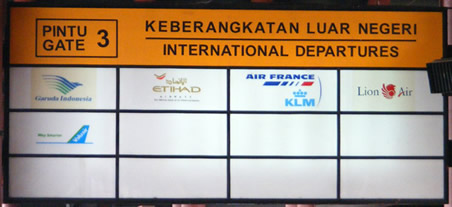

Kebanggaanku
As the flight takes off, the passengers are welcomed by the following film clip. Watch the clip and complete the following tasks.
Read about Garuda in the pojok budaya.
- Make a list of images presented in the clip.
- What impressions of Garuda (the airline) are communicated in the clip?
- Now listen to the lyrics. Practise your listening skills by filling in the missing words in the exercise below.
Kebanggaanku
Melayang
Menjelajah benua
Mengibarkan sang saka
Menebar citra
Ke seluruh
Terbanglah.
Refrain:
Indonesia
Kebanggaan bersama yang selalu bela
Garuda Indonesia
Akan jaga demi Nusabangsa.
Selalu ku
Kesetiaan kepercayaan
Dari sahabat Garuda Indonesia
Senantiasa
Click here to check your answers and see a translation of the song.
Lyrics – Kebanggaanku
Melayang tinggi Menjelajah segala benua Mengibarkan sang saka (sang saka merah putih) Menebar citra bangsa Ke seluruh dunia Terbanglah Refrain: Garuda Indonesia Kebanggaan bersama yang selalu kita bela Garuda Indonesia Akan ku jaga demi Nusa bangsa Selalu ku jaga Kesetiaan kepercayaan Dari para sahabat Garuda Indonesia Senantiasa bersama |
Flying high Exploring all continents Waving the flag Spreading the image of the nation To the whole earth Fly Refrain: Garuda Indonesia Our joint pride we always defend Garuda Indonesia I will guard you for the people of Indonesia I will always defend Loyalty, trust Of our friends Garuda Indonesia Always together |
Check your understanding
Check your understanding by answering the questions below. You may discuss the questions as a group.
-
What typically Indonesian symbols or images appear in the song?
garuda/eagle, flag, volcanoes, Prambanan temple, landscape
How does the song include the viewer?
Uses ku as familiar, making viewer friends with the company.
Uses words like bersama (together) and kita (we including the viewer).
How does the song (lyrics or images) promote an idea of national identity?
What images give an impression of professionalism?
How does the song promote a feeling of pride?
How did you feel when you watched the clip? Why?
Ke-an
Reproduced with the permission of Roy Indrawan Asikin Soerja Djanegara
| Saya bangga | I am proud. |
| Kebanggaan saya | My pride. |
| Saya percaya pada … | I believe in … |
| Kepercayaan saya | My belief |
| Saya setia | I am loyal |
| Kesetiaan saya | My loyalty |
How would you explain the difference between the base-word and the ke-an word to someone?
Was your answer something like this?
Ke-an words are nouns, whereas the base-words are verbs or adjectives. You do or feel the base-word, but by adding ke-an it becomes the thing that is felt. (These ke-an nouns are abstract nouns – they are not physical, they cannot be touched.)
A second point is that the word order is different. You can say 'I …' for the base-words, but you have to say 'The … of me' for the ke-an words.
Can you work out the meaning of the following ke-an words?
| datang | arrive | kedatangan | arrival | |
| berangkat | leave | keberangkatan | departure | |
| selamat | safe | keselamatan | safety | |
| tinggi | tall | Ketinggian | height | |
| cepat | fast | Kecepatan | speed |
Write three sentences to practise using the ke-an words in the table above.
Reproduced with the permission of Roy Indrawan Asikin Soerja Djanegara